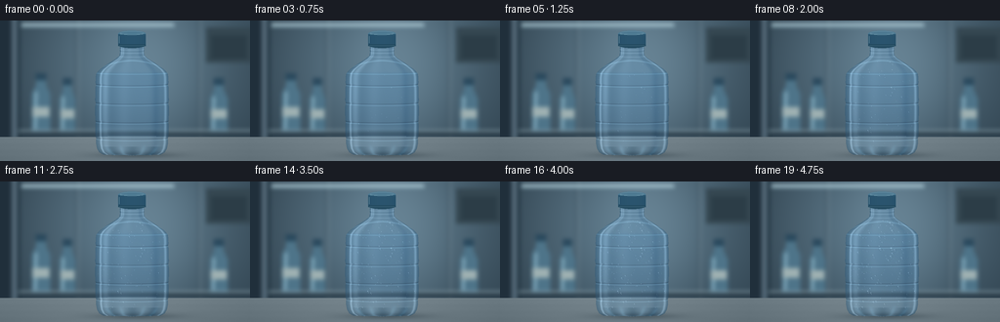
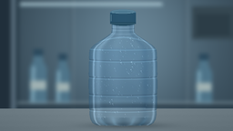
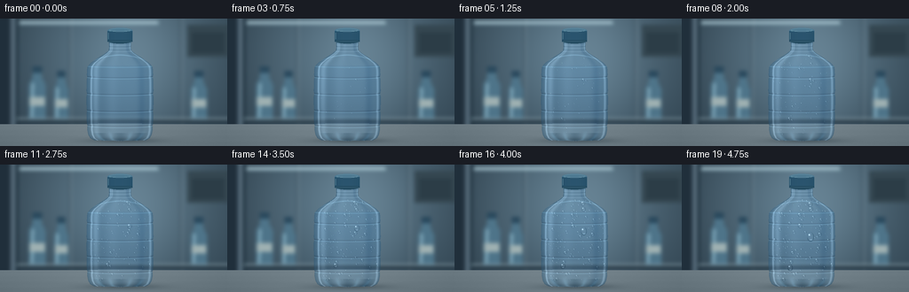

CODING AGENTS AS PIXEL WORLD MODELS
traex/GPT-6.1-Sol · phygen_115
点击播放 · 原生 RGB 像素
逐轮保存的候选
回放视频、检查图与代码变化。
每份候选均可单独播放。实际图片检查记录在下方工具轨迹中。
候选 01播放与检查图
点击播放 · 原生 RGB 像素

展开代码变化
--- 上一保存版本
+++ 本次保存版本
@@ -0,0 +1,228 @@
+from pathlib import Path
+import math
+import numpy as np
+from PIL import Image, ImageDraw, ImageFilter
+import artifact_io
+
+ROOT=Path(__file__).resolve().parent
+W,H,S=256,144,3
+WW,HH=W*S,H*S
+rng=np.random.default_rng(115)
+
+def box(d,xy,fill,width=1):
+ d.rectangle(tuple(int(v*S) for v in xy),fill=fill,width=max(1,int(width*S)))
+def line(d,xy,fill,width=1):
+ d.line([(int(x*S),int(y*S)) for x,y in xy],fill=fill,width=max(1,int(width*S)))
+def ellipse(d,xy,fill,outline=None,width=1):
+ d.ellipse(tuple(int(v*S) for v in xy),fill=fill,outline=outline,width=max(1,int(width*S)))
+
+# Defocused refrigerated storage room, with overhead strip lighting and a steel shelf.
+y,x=np.mgrid[0:HH,0:WW].astype(float)/S
+walllight=np.exp(-((x-142)/116)**2-((y-44)/113)**2)
+background=np.stack([37+64*walllight,54+75*walllight,66+80*walllight],axis=-1)
+background+=np.sin(x*.051)[...,None]*2
+background=np.clip(background,0,255).astype('uint8')
+bg=Image.fromarray(background)
+d=ImageDraw.Draw(bg)
+box(d,(0,0,12,144),(32,47,59))
+box(d,(12,0,17,144),(86,107,122))
+box(d,(18,0,20,144),(28,46,58))
+# Vertical seams of insulated wall panels.
+for a in (78,203):
+ line(d,[(a,0),(a,122)],(57,78,92),1.2)
+ line(d,[(a+2,0),(a+2,122)],(131,151,162),.8)
+# Soft refrigeration evaporator at upper right.
+box(d,(211,7,257,43),(53,71,81))
+for a in range(17,40,4):
+ line(d,[(216,a),(253,a)],(26,43,53),1.5)
+line(d,[(22,4),(178,4)],(204,231,240),2)
+line(d,[(21,6),(179,6)],(118,153,167),1)
+# Out-of-focus shelf contents, distinctly secondary to the dry foreground bottle.
+for cx,yy,ww,hh in [(42,59,19,55),(69,64,16,50),(224,64,18,50)]:
+ body=[(cx-ww/2,yy+hh),(cx-ww/2,yy+16),(cx-ww*.27,yy+7),(cx-ww*.26,yy),(cx+ww*.26,yy),(cx+ww*.27,yy+7),(cx+ww/2,yy+16),(cx+ww/2,yy+hh)]
+ d.polygon([(int(a*S),int(b*S)) for a,b in body],fill=(78,116,137))
+ line(d,[(cx-ww*.28,yy+14),(cx-ww*.32,yy+hh-3)],(151,191,208),2)
+ box(d,(cx-ww*.28,yy-5,cx+ww*.28,yy+2),(42,73,93))
+ box(d,(cx-ww/2+1,yy+hh*.54,cx+ww/2-1,yy+hh*.72),(159,177,178))
+line(d,[(19,116),(256,116)],(34,51,63),4)
+line(d,[(19,113),(256,113)],(159,183,192),1.5)
+bg=bg.filter(ImageFilter.GaussianBlur(2.15*S))
+# Closer brushed-metal surface; shallow depth of field keeps its rear lip diffuse.
+b=np.array(bg).astype(float)
+floor=y>119
+floorlight=115+16*np.exp(-((x-124)/113)**2)-.40*(y-119)
+fc=np.stack([floorlight-13,floorlight+2,floorlight+10],axis=-1)
+b[floor]=fc[floor]
+b+=((rng.normal(0,.47,(HH,WW))+.6*np.sin(y*17.9))[...,None])*floor[...,None]
+shadow=33*np.exp(-((x-139)/41)**2-((y-137.8)/3.1)**2)
+b-=shadow[...,None]
+# Very soft reflected bottle color on the steel.
+refl=np.exp(-((x-135)/29)**2)*np.clip((y-138)/6,0,1)*3
+b[:,:,0]-=refl;b[:,:,2]+=refl
+b=np.clip(b,0,255)
+
+cx=135.0
+yp=np.array([24,28,32,36,39,44,50,54,58,64,72,83,94,105,118,126,131,135,137.5,138.1])
+rp=np.array([12,12.6,12.3,13,16.5,24.5,33.0,36.5,37.2,37.4,37.6,37.7,37.7,37.6,37.3,36.8,35.8,33.5,29,0])
+radius=np.interp(y,yp,rp,left=0,right=0)
+for band in [66,85,104,121]:
+ radius-=.58*np.exp(-((y-band)/1.55)**2)
+u=(x-cx)/np.maximum(radius,.001)
+mask=(np.abs(u)<1)&(y>=24)&(y<=138)
+nz=np.sqrt(np.clip(1-u*u,0,1))
+# Transparent PET and water refract the wall, with physically motivated edge reflections.
+refx=np.clip((cx+u*radius*.51+9*u*nz)*S,0,WW-1).astype(int)
+refy=np.clip((y+.9*nz)*S,0,HH-1).astype(int)
+refr=b[refy,refx]
+water=(1/(1+np.exp(-(y-53.1)*3)))
+col=refr*np.array([.75,.85,.91])+np.array([15,18,20])
+col+=(11*nz)[...,None]
+col-=water[...,None]*np.array([4.8,2.5,.2])
+fres=(1-nz)**2.5
+col=col*(1-.49*fres[...,None])+np.array([39,72,94])*.49*fres[...,None]
+# Tall, curved reflections of the refrigerator's ceiling lamps.
+left=np.exp(-((u+.73)/.095)**2)*(19+11*np.exp(-((y-65)/43)**2))
+thin=np.exp(-((u+.86)/.026)**2)*51
+right=np.exp(-((u-.91)/.035)**2)*39
+center=np.exp(-((u+.23)/.18)**2)*7
+col+=(left+thin+right+center)[...,None]*np.array([.90,.98,1.04])
+col-=np.exp(-((u-.65)/.11)**2)[...,None]*np.array([11,10,8])
+# Shoulder highlights and stress lines in molded transparent plastic.
+shoulder=np.exp(-((y-(48-7*nz))/.65)**2)*(y<54)
+col+=shoulder[...,None]*np.array([21,27,29])
+for band in (65,84,103,120):
+ offset=y-(band+1.9*nz)
+ col-=np.exp(-(offset/.6)**2)[...,None]*np.array([12,16,17])
+ col+=np.exp(-((offset-1.05)/.58)**2)[...,None]*np.array([16,21,23])
+# The water meniscus, neck thread and lower PET feet.
+meniscus=np.exp(-((y-(53.7+1.3*nz))/.50)**2)
+col+=meniscus[...,None]*np.array([13,20,22])
+for yy in [28.5,31.7,35.6]:
+ z=y-(yy+.7*nz)
+ col-=np.exp(-(z/.45)**2)[...,None]*12
+ col+=np.exp(-((z-.7)/.38)**2)[...,None]*24
+base=(y>129)&mask
+col-=base[...,None]*(10+8*np.cos(u*10))[...,None]
+for xx in [-.70,-.31,.33,.70]:
+ feet=np.exp(-((u-xx*(1-(y-130)*.017))/.065)**2)*np.clip((y-126)/9,0,1)
+ col+=feet[...,None]*np.array([11,18,21])
+col+=rng.normal(0,.38,(HH,WW,1))
+base_img=b.copy()
+base_img[mask]=col[mask]
+base_img=np.clip(base_img,0,255)
+# Dark teal screw cap, gently rounded top and molded fine vertical grip ribs.
+cap_layer=Image.fromarray(base_img.astype(np.uint8))
+d=ImageDraw.Draw(cap_layer)
+box(d,(121,14,149,26),(35,78,103))
+ellipse(d,(121,10.5,149,16.5),(77,121,145))
+ellipse(d,(121,22.3,149,28),(35,74,95))
+box(d,(121,14,149,24),(40,84,110))
+for xx in np.arange(121.8,149,.95):
+ shade=int(5+15*math.sqrt(max(0,1-((xx-135)/14)**2)))
+ line(d,[(xx,15.4),(xx,24.2)],(27+shade,65+shade,90+shade),.32)
+line(d,[(123,14.2),(146,14.2)],(102,149,170),.6)
+line(d,[(122,25.7),(148,25.7)],(76,117,139),.65)
+ellipse(d,(123,11.3,147,14.8),None,(113,152,170),.35)
+line(d,[(122.3,16),(122.3,23)],(135,176,190),.5)
+base_img=np.array(cap_layer).astype(float)
+
+# Spatially stable nucleation sites. Volume grows through condensation, then beads
+# coalesce with conservation of liquid volume; sufficiently large drops slip down.
+def rr(yy):return float(np.interp(yy,yp,rp,left=0,right=0))
+seeds=[]
+for _ in range(10000):
+ if len(seeds)>=170:break
+ py=rng.uniform(40,132.5)
+ px=cx+rng.uniform(-.94,.94)*rr(py)
+ if all((px-a['x'])**2+(py-a['y'])**2>2.55**2 for a in seeds):
+ size=float(np.clip(rng.lognormal(-.19,.43),.40,1.75))
+ seeds.append(dict(x=px,y=py,v=0.,born=float(rng.uniform(.035,.59)),target=size**3,alive=True,trail=[],speed=0.))
+# Two neighboring groups whose mergers become visible as the time-lapse proceeds.
+for px,py,size,born in [(145,69,2.17,.10),(148,70.3,1.60,.16),(145.7,74,1.48,.22),(121,113,1.95,.13),(124,114.6,1.60,.25)]:
+ seeds=[a for a in seeds if math.hypot(a['x']-px,a['y']-py)>2.7]
+ seeds.append(dict(x=px,y=py,v=0.,born=born,target=size**3,alive=True,trail=[],speed=0.))
+# Microscopic droplets appear later between the larger beads.
+micro=[]
+for _ in range(200):
+ py=rng.uniform(43,133);px=cx+rng.uniform(-.95,.95)*rr(py)
+ micro.append((px,py,float(rng.uniform(.10,.38)),float(rng.uniform(.18,.73))))
+
+def evolve(t,dt):
+ for a in seeds:
+ if not a['alive'] or t<a['born']:continue
+ a['v']+=a['target']*dt/max(.2,1-a['born'])
+ rad=a['v']**(1/3)
+ if rad>2.29:
+ a['speed']=min(45,(rad-2.29)*35+5)
+ if not a['trail'] or a['y']-a['trail'][-1][1]>.3:a['trail'].append((a['x'],a['y']))
+ a['y']+=a['speed']*dt
+ if a['y']>135.5:a['alive']=False
+ for i,a in enumerate(seeds):
+ if not a['alive'] or a['v']==0:continue
+ for bb in seeds[i+1:]:
+ if not bb['alive'] or bb['v']==0:continue
+ ra=a['v']**(1/3);rb=bb['v']**(1/3)
+ if (a['x']-bb['x'])**2+(a['y']-bb['y'])**2<(.78*(ra+rb))**2:
+ va,vb=a['v'],bb['v'];v=va+vb
+ a['x']=(a['x']*va+bb['x']*vb)/v
+ a['y']=(a['y']*va+bb['y']*vb)/v
+ a['v']=v;a['target']+=bb['target']*.42
+ bb['alive']=False
+
+def droplet(arr,under,px,py,rad,speed=0):
+ if rad<.045:return
+ ry=rad*(1+min(.32,speed/120))
+ rx=rad
+ # Curvature foreshortens beads close to the cylindrical silhouette.
+ side=abs((px-cx)/max(1,rr(py)));rx*=max(.60,math.sqrt(max(.05,1-side*side)))
+ x0=max(0,int((px-rx-1)*S));x1=min(WW,int((px+rx+1)*S)+1)
+ y0=max(0,int((py-ry-1)*S));y1=min(HH,int((py+ry+1)*S)+1)
+ gy,gx=np.mgrid[y0:y1,x0:x1].astype(float)/S
+ qx=(gx-px)/rx;qy=(gy-py)/ry
+ q2=qx*qx+qy*qy
+ alpha=np.clip((1-q2)*rad*S*1.7,0,1)
+ nz2=np.sqrt(np.clip(1-q2,0,1))
+ sx=np.clip(((px+(gx-px)*.73+.22*rad*qx*nz2)*S).astype(int),0,WW-1)
+ sy=np.clip(((py+(gy-py)*.73+.16*rad*qy*nz2)*S).astype(int),0,HH-1)
+ lens=under[sy,sx].copy()
+ # Clear center, dark curved edge, bright specular highlight and lower caustic.
+ rim=np.clip((np.sqrt(q2)-.52)/.48,0,1)
+ lower=(.65+.35*(qy+1)/2)
+ lens-=((rim**1.6)*25*lower)[...,None]
+ lens+=(4.0*nz2)[...,None]
+ glint=np.exp(-(((qx+.35)/.19)**2+((qy+.43)/.16)**2))*113
+ upperarc=np.exp(-((np.sqrt(q2)-.84)/.10)**2)*np.clip(-.6*qx-.8*qy,0,1)*26
+ caustic=np.exp(-((qy-.61)/.14)**2-((qx-.14)/.48)**2)*33
+ lens+=(glint+upperarc+caustic)[...,None]*np.array([.93,.99,1.03])
+ local=arr[y0:y1,x0:x1]
+ local[:]=local*(1-alpha[...,None])+np.clip(lens,0,255)*alpha[...,None]
+
+frames=[]
+prev=0
+for frame in range(20):
+ t=frame/19
+ steps=max(1,int(math.ceil((t-prev)/.006)))
+ dt=(t-prev)/steps
+ for j in range(steps):evolve(prev+(j+1)*dt,dt)
+ prev=t
+ image=base_img.copy()
+ # A very thin, mottled dew film forms before larger beads; no frost or ice.
+ dewmask=(mask&(y>38)&(y<135))
+ film=(.5+.5*np.sin(x*.17+y*.09)*np.sin(y*.21-x*.11))
+ strength=(t**.7)*.032*film*dewmask
+ image=image*(1-strength[...,None])+np.array([169,193,204])*strength[...,None]
+ # Transparent wet tracks only behind moving merged drops.
+ for a in seeds:
+ if len(a['trail'])>1:
+ for tx,ty in a['trail']:
+ trace=np.exp(-((x-tx)/.27)**2-((y-ty)/.7)**2)*1.9
+ image+=trace[...,None]*np.array([.65,.85,1.])
+ under=image.copy()
+ for px,py,r,birth in micro:
+ if t>birth:droplet(image,under,px,py,r*min(1,(t-birth)/.28))
+ for a in sorted(seeds,key=lambda a:a['v']):
+ if a['alive'] and a['v']>0:droplet(image,under,a['x'],a['y'],a['v']**(1/3),a['speed'])
+ out=Image.fromarray(np.clip(image,0,255).astype('uint8')).resize((W,H),Image.Resampling.LANCZOS)
+ frames.append(np.array(out))
+artifact_io.save(np.stack(frames),ROOT)
+print('Saved',len(frames),'RGB frames at',W,'x',H)
候选 02播放与检查图
点击播放 · 原生 RGB 像素
展开代码变化
--- 上一保存版本
+++ 本次保存版本
@@ -141,6 +141,8 @@
for px,py,size,born in [(145,69,2.17,.10),(148,70.3,1.60,.16),(145.7,74,1.48,.22),(121,113,1.95,.13),(124,114.6,1.60,.25)]:
seeds=[a for a in seeds if math.hypot(a['x']-px,a['y']-py)>2.7]
seeds.append(dict(x=px,y=py,v=0.,born=born,target=size**3,alive=True,trail=[],speed=0.))
+# Amplify mature bead volumes for a readable macro view at the output resolution.
+for a in seeds:a['target']*=3.1
# Microscopic droplets appear later between the larger beads.
micro=[]
for _ in range(200):
@@ -152,8 +154,8 @@
if not a['alive'] or t<a['born']:continue
a['v']+=a['target']*dt/max(.2,1-a['born'])
rad=a['v']**(1/3)
- if rad>2.29:
- a['speed']=min(45,(rad-2.29)*35+5)
+ if rad>2.85:
+ a['speed']=min(45,(rad-2.85)*32+5)
if not a['trail'] or a['y']-a['trail'][-1][1]>.3:a['trail'].append((a['x'],a['y']))
a['y']+=a['speed']*dt
if a['y']>135.5:a['alive']=False
@@ -188,11 +190,11 @@
# Clear center, dark curved edge, bright specular highlight and lower caustic.
rim=np.clip((np.sqrt(q2)-.52)/.48,0,1)
lower=(.65+.35*(qy+1)/2)
- lens-=((rim**1.6)*25*lower)[...,None]
+ lens-=((rim**1.6)*43*lower)[...,None]
lens+=(4.0*nz2)[...,None]
- glint=np.exp(-(((qx+.35)/.19)**2+((qy+.43)/.16)**2))*113
- upperarc=np.exp(-((np.sqrt(q2)-.84)/.10)**2)*np.clip(-.6*qx-.8*qy,0,1)*26
- caustic=np.exp(-((qy-.61)/.14)**2-((qx-.14)/.48)**2)*33
+ glint=np.exp(-(((qx+.35)/.19)**2+((qy+.43)/.16)**2))*158
+ upperarc=np.exp(-((np.sqrt(q2)-.84)/.10)**2)*np.clip(-.6*qx-.8*qy,0,1)*38
+ caustic=np.exp(-((qy-.61)/.14)**2-((qx-.14)/.48)**2)*45
lens+=(glint+upperarc+caustic)[...,None]*np.array([.93,.99,1.03])
local=arr[y0:y1,x0:x1]
local[:]=local*(1-alpha[...,None])+np.clip(lens,0,255)*alpha[...,None]
候选 03播放与检查图

可观测工具轨迹
实际执行的命令与返回图片。
命令 1exit 0
/bin/bash -lc 'ls -la && cat prompt.txt && cat GENERATION_RULES.md && cat task_spec.json'
命令 2exit 0
/bin/bash -lc 'cat artifact_io.py'
命令 3exit 0
/bin/bash -lc "python - <<'PY'
import numpy,PIL
print('ready',numpy.__version__)
PY"命令 4exit 0
/bin/bash -lc "cat > generate.py <<'PY'
from pathlib import Path
import math
import numpy as np
from PIL import Image, ImageDraw, ImageFilter
import artifact_io
ROOT=Path(__file__).resolve().parent
W,H,S=256,144,3
WW,HH=W*S,H*S
rng=np.random.default_rng(115)
def box(d,xy,fill,width=1):
d.rectangle(tuple(int(v*S) for v in xy),fill=fill,width=max(1,int(width*S)))
def line(d,xy,fill,width=1):
d.line([(int(x*S),int(y*S)) for x,y in xy],fill=fill,width=max(1,int(width*S)))
def ellipse(d,xy,fill,outline=None,width=1):
d.ellipse(tuple(int(v*S) for v in xy),fill=fill,outline=outline,width=max(1,int(width*S)))
# Defocused refrigerated storage room, with overhead strip lighting and a steel shelf.
y,x=np.mgrid[0:HH,0:WW].astype(float)/S
walllight=np.exp(-((x-142)/116)**2-((y-44)/113)**2)
background=np.stack([37+64*walllight,54+75*walllight,66+80*walllight],axis=-1)
background+=np.sin(x*.051)[...,None]*2
background=np.clip(background,0,255).astype('uint8')
bg=Image.fromarray(background)
d=ImageDraw.Draw(bg)
box(d,(0,0,12,144),(32,47,59))
box(d,(12,0,17,144),(86,107,122))
box(d,(18,0,20,144),(28,46,58))
# Vertical seams of insulated wall panels.
for a in (78,203):
line(d,[(a,0),(a,122)],(57,78,92),1.2)
line(d,[(a+2,0),(a+2,122)],(131,151,162),.8)
# Soft refrigeration evaporator at upper right.
box(d,(211,7,257,43),(53,71,81))
for a in range(17,40,4):
line(d,[(216,a),(253,a)],(26,43,53),1.5)
line(d,[(22,4),(178,4)],(204,231,240),2)
line(d,[(21,6),(179,6)],(118,153,167),1)
# Out-of-focus shelf contents, distinctly secondary to the dry foreground bottle.
for cx,yy,ww,hh in [(42,59,19,55),(69,64,16,50),(224,64,18,50)]:
body=[(cx-ww/2,yy+hh),(cx-ww/2,yy+16),(cx-ww*.27,yy+7),(cx-ww*.26,yy),(cx+ww*.26,yy),(cx+ww*.27,yy+7),(cx+ww/2,yy+16),(cx+ww/2,yy+hh)]
d.polygon([(int(a*S),int(b*S)) for a,b in body],fill=(78,116,137))
line(d,[(cx-ww*.28,yy+14),(cx-ww*.32,yy+hh-3)],(151,191,208),2)
box(d,(cx-ww*.28,yy-5,cx+ww*.28,yy+2),(42,73,93))
box(d,(cx-ww/2+1,yy+hh*.54,cx+ww/2-1,yy+hh*.72),(159,177,178))
line(d,[(19,116),(256,116)],(34,51,63),4)
line(d,[(19,113),(256,113)],(159,183,192),1.5)
bg=bg.filter(ImageFilter.GaussianBlur(2.15*S))
# Closer brushed-metal surface; shallow depth of field keeps its rear lip diffuse.
b=np.array(bg).astype(float)
floor=y>119
floorlight=115+16*np.exp(-((x-124)/113)**2)-.40*(y-119)
fc=np.stack([floorlight-13,floorlight+2,floorlight+10],axis=-1)
b[floor]=fc[floor]
b+=((rng.normal(0,.47,(HH,WW))+.6*np.sin(y*17.9))[...,None])*floor[...,None]
shadow=33*np.exp(-((x-139)/41)**2-((y-137.8)/3.1)**2)
b-=shadow[...,None]
# Very soft reflected bottle color on the steel.
refl=np.exp(-((x-135)/29)**2)*np.clip((y-138)/6,0,1)*3
b[:,:,0]-=refl;b[:,:,2]+=refl
b=np.clip(b,0,255)
cx=135.0
yp=np.array([24,28,32,36,39,44,50,54,58,64,72,83,94,105,118,126,131,135,137.5,138.1])
rp=np.array([12,12.6,12.3,13,16.5,24.5,33.0,36.5,37.2,37.4,37.6,37.7,37.7,37.6,37.3,36.8,35.8,33.5,29,0])
radius=np.interp(y,yp,rp,left=0,right=0)
for band in [66,85,104,121]:
radius-=.58*np.exp(-((y-band)/1.55)**2)
u=(x-cx)/np.maximum(radius,.001)
mask=(np.abs(u)<1)&(y>=24)&(y<=138)
nz=np.sqrt(np.clip(1-u*u,0,1))
# Transparent PET and water refract the wall, with physically motivated edge reflections.
refx=np.clip((cx+u*radius*.51+9*u*nz)*S,0,WW-1).astype(int)
refy=np.clip((y+.9*nz)*S,0,HH-1).astype(int)
refr=b[refy,refx]
water=(1/(1+np.exp(-(y-53.1)*3)))
col=refr*np.array([.75,.85,.91])+np.array([15,18,20])
col+=(11*nz)[...,None]
col-=water[...,None]*np.array([4.8,2.5,.2])
fres=(1-nz)**2.5
col=col*(1-.49*fres[...,None])+np.array([39,72,94])*.49*fres[...,None]
# Tall, curved reflections of the refrigerator's ceiling lamps.
left=np.exp(-((u+.73)/.095)**2)*(19+11*np.exp(-((y-65)/43)**2))
thin=np.exp(-((u+.86)/.026)**2)*51
right=np.exp(-((u-.91)/.035)**2)*39
center=np.exp(-((u+.23)/.18)**2)*7
col+=(left+thin+right+center)[...,None]*np.array([.90,.98,1.04])
col-=np.exp(-((u-.65)/.11)**2)[...,None]*np.array([11,10,8])
# Shoulder highlights and stress lines in molded transparent plastic.
shoulder=np.exp(-((y-(48-7*nz))/.65)**2)*(y<54)
col+=shoulder[...,None]*np.array([21,27,29])
for band in (65,84,103,120):
offset=y-(band+1.9*nz)
col-=np.exp(-(offset/.6)**2)[...,None]*np.array([12,16,17])
col+=np.exp(-((offset-1.05)/.58)**2)[...,None]*np.array([16,21,23])
# The water meniscus, neck thread and lower PET feet.
meniscus=np.exp(-((y-(53.7+1.3*nz))/.50)**2)
col+=meniscus[...,None]*np.array([13,20,22])
for yy in [28.5,31.7,35.6]:
z=y-(yy+.7*nz)
col-=np.exp(-(z/.45)**2)[...,None]*12
col+=np.exp(-((z-.7)/.38)**2)[...,None]*24
base=(y>129)&mask
col-=base[...,None]*(10+8*np.cos(u*10))[...,None]
for xx in [-.70,-.31,.33,.70]:
feet=np.exp(-((u-xx*(1-(y-130)*.017))/.065)**2)*np.clip((y-126)/9,0,1)
col+=feet[...,None]*np.array([11,18,21])
col+=rng.normal(0,.38,(HH,WW,1))
base_img=b.copy()
base_img[mask]=col[mask]
base_img=np.clip(base_img,0,255)
# Dark teal screw cap, gently rounded top and molded fine vertical grip ribs.
cap_layer=Image.fromarray(base_img.astype(np.uint8))
d=ImageDraw.Draw(cap_layer)
box(d,(121,14,149,26),(35,78,103))
ellipse(d,(121,10.5,149,16.5),(77,121,145))
ellipse(d,(121,22.3,149,28),(35,74,95))
box(d,(121,14,149,24),(40,84,110))
for xx in np.arange(121.8,149,.95):
shade=int(5+15*math.sqrt(max(0,1-((xx-135)/14)**2)))
line(d,[(xx,15.4),(xx,24.2)],(27+shade,65+shade,90+shade),.32)
line(d,[(123,14.2),(146,14.2)],(102,149,170),.6)
line(d,[(122,25.7),(148,25.7)],(76,117,139),.65)
ellipse(d,(123,11.3,147,14.8),None,(113,152,170),.35)
line(d,[(122.3,16),(122.3,23)],(135,176,190),.5)
base_img=np.array(cap_layer).astype(float)
# Spatially stable nucleation sites. Volume grows through condensation, then beads
# coalesce with conservation of liquid volume; sufficiently large drops slip down.
def rr(yy):return float(np.interp(yy,yp,rp,left=0,right=0))
seeds=[]
for _ in range(10000):
if len(seeds)>=170:break
py=rng.uniform(40,132.5)
px=cx+rng.uniform(-.94,.94)*rr(py)
if all((px-a['x'])**2+(py-a['y'])**2>2.55**2 for a in seeds):
size=float(np.clip(rng.lognormal(-.19,.43),.40,1.75))
seeds.append(dict(x=px,y=py,v=0.,born=float(rng.uniform(.035,.59)),target=size**3,alive=True,trail=[],speed=0.))
# Two neighboring groups whose mergers become visible as the time-lapse proceeds.
for px,py,size,born in [(145,69,2.17,.10),(148,70.3,1.60,.16),(145.7,74,1.48,.22),(121,113,1.95,.13),(124,114.6,1.60,.25)]:
seeds=[a for a in seeds if math.hypot(a['x']-px,a['y']-py)>2.7]
seeds.append(dict(x=px,y=py,v=0.,born=born,target=size**3,alive=True,trail=[],speed=0.))
# Microscopic droplets appear later between the larger beads.
micro=[]
for _ in range(200):
py=rng.uniform(43,133);px=cx+rng.uniform(-.95,.95)*rr(py)
micro.append((px,py,float(rng.uniform(.10,.38)),float(rng.uniform(.18,.73))))
def evolve(t,dt):
for a in seeds:
if not a['alive'] or t<a['born']:continue
a['v']+=a['target']*dt/max(.2,1-a['born'])
rad=a['v']**(1/3)
if rad>2.29:
a['speed']=min(45,(rad-2.29)*35+5)
if not a['trail'] or a['y']-a['trail'][-1][1]>.3:a['trail'].append((a['x'],a['y']))
a['y']+=a['speed']*dt
if a['y']>135.5:a['alive']=False
for i,a in enumerate(seeds):
if not a['alive'] or a['v']==0:continue
for bb in seeds[i+1:]:
if not bb['alive'] or bb['v']==0:continue
ra=a['v']**(1/3);rb=bb['v']**(1/3)
if (a['x']-bb['x'])**2+(a['y']-bb['y'])**2<(.78*(ra+rb))**2:
va,vb=a['v'],bb['v'];v=va+vb
a['x']=(a['x']*va+bb['x']*vb)/v
a['y']=(a['y']*va+bb['y']*vb)/v
a['v']=v;a['target']+=bb['target']*.42
bb['alive']=False
def droplet(arr,under,px,py,rad,speed=0):
if rad<.045:return
ry=rad*(1+min(.32,speed/120))
rx=rad
# Curvature foreshortens beads close to the cylindrical silhouette.
side=abs((px-cx)/max(1,rr(py)));rx*=max(.60,math.sqrt(max(.05,1-side*side)))
x0=max(0,int((px-rx-1)*S));x1=min(WW,int((px+rx+1)*S)+1)
y0=max(0,int((py-ry-1)*S));y1=min(HH,int((py+ry+1)*S)+1)
gy,gx=np.mgrid[y0:y1,x0:x1].astype(float)/S
qx=(gx-px)/rx;qy=(gy-py)/ry
q2=qx*qx+qy*qy
alpha=np.clip((1-q2)*rad*S*1.7,0,1)
nz2=np.sqrt(np.clip(1-q2,0,1))
sx=np.clip(((px+(gx-px)*.73+.22*rad*qx*nz2)*S).astype(int),0,WW-1)
sy=np.clip(((py+(gy-py)*.73+.16*rad*qy*nz2)*S).astype(int),0,HH-1)
lens=under[sy,sx].copy()
# Clear center, dark curved edge, bright specular highlight and lower caustic.
rim=np.clip((np.sqrt(q2)-.52)/.48,0,1)
lower=(.65+.35*(qy+1)/2)
lens-=((rim**1.6)*25*lower)[...,None]
lens+=(4.0*nz2)[...,None]
glint=np.exp(-(((qx+.35)/.19)**2+((qy+.43)/.16)**2))*113
upperarc=np.exp(-((np.sqrt(q2)-.84)/.10)**2)*np.clip(-.6*qx-.8*qy,0,1)*26
caustic=np.exp(-((qy-.61)/.14)**2-((qx-.14)/.48)**2)*33
lens+=(glint+upperarc+caustic)[...,None]*np.array([.93,.99,1.03])
local=arr[y0:y1,x0:x1]
local[:]=local*(1-alpha[...,None])+np.clip(lens,0,255)*alpha[...,None]
frames=[]
prev=0
for frame in range(20):
t=frame/19
steps=max(1,int(math.ceil((t-prev)/.006)))
dt=(t-prev)/steps
for j in range(steps):evolve(prev+(j+1)*dt,dt)
prev=t
image=base_img.copy()
# A very thin, mottled dew film forms before larger beads; no frost or ice.
dewmask=(mask&(y>38)&(y<135))
film=(.5+.5*np.sin(x*.17+y*.09)*np.sin(y*.21-x*.11))
strength=(t**.7)*.032*film*dewmask
image=image*(1-strength[...,None])+np.array([169,193,204])*strength[...,None]
# Transparent wet tracks only behind moving merged drops.
for a in seeds:
if len(a['trail'])>1:
for tx,ty in a['trail']:
trace=np.exp(-((x-tx)/.27)**2-((y-ty)/.7)**2)*1.9
image+=trace[...,None]*np.array([.65,.85,1.])
under=image.copy()
for px,py,r,birth in micro:
if t>birth:droplet(image,under,px,py,r*min(1,(t-birth)/.28))
for a in sorted(seeds,key=lambda a:a['v']):
if a['alive'] and a['v']>0:droplet(image,under,a['x'],a['y'],a['v']**(1/3),a['speed'])
out=Image.fromarray(np.clip(image,0,255).astype('uint8')).resize((W,H),Image.Resampling.LANCZOS)
frames.append(np.array(out))
artifact_io.save(np.stack(frames),ROOT)
print('Saved',len(frames),'RGB frames at',W,'x',H)
PY
python generate.py"命令 5exit 0
/bin/bash -lc "python - <<'PY'
p='generate.py'
s=open(p).read().replace(\"# Microscopic droplets appear later between the larger beads.\",\"# Amplify mature bead volumes for a readable macro view at the output resolution.\\nfor a in seeds:a['target']*=3.1\\n# Microscopic droplets appear later between the larger beads.\")
s=s.replace('if rad>2.29:', 'if rad>2.85:').replace('(rad-2.29)*35+5','(rad-2.85)*32+5')
s=s.replace('(rim**1.6)*25*lower','(rim**1.6)*43*lower').replace(')*113',')*158').replace('qy,0,1)*26','qy,0,1)*38').replace('((qx-.14)/.48)**2)*33','((qx-.14)/.48)**2)*45')
open(p,'w').write(s)
PY
python generate.py"命令 6exit 0
/bin/bash -lc "ls -lh pixels.npz index.html inspection.png generate.py && python - <<'PY'
import numpy as np
p=np.load('pixels.npz')['pixels']
print('packed RGB tensor:',p.shape,p.dtype)
from pathlib import Path
print('PNG frames:',len(list(Path('frames').glob('*.png'))))
PY"视觉工具实际返回图片 1

视觉工具实际返回图片 2

视觉工具实际返回图片 3

保存候选 3 份；完成命令 6 次；可验证图片返回 3 张。原始 API 响应与完整日志保留在本地。